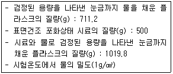
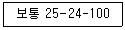

콘크리트기능사 (2016-04-02 기출문제)
1과목: 콘크리트재료
1. 시멘트 분말도에 관한 설명 중 옳은 것은?
- 분말도가 높을수록 물에 접촉하는 면적이 작다.
- 분말도가 높을수록 수화작용이 느리다.
- 분말도가 높을수록 콘크리트에 내구성이 좋다.
- 분말도가 높을수록 콘크리트에 균열이 발생하기 쉽다.
(정답률: 68%)

2. 다음은 골재의 입도(粒度)에 대한 설명이다. 적당하지 못한 것은 어느 것인가?
- 입도시험을 위한 골재는 4분법이나 시료분취기에 의하여 필요한 양을 채취한다.
- 입도란 크고 작은 골재알이 혼합되어 있는 정도를 말하며 체가름시험에 의하여 구할 수 있다.
- 입도가 좋은 골재를 사용한 콘크리트의 간극이 커지기 때문에 강도가 저하된다.
- 입도곡선이란 골재의 체가름시험 결과를 곡선으로 표시한 것이며, 입도곡선이 표준 입도곡선 내에 들어가야 한다.
(정답률: 80%)
3. 휨강도 공시체 150mm×150mm×530mm의 몰드를 제작할 때 각 층은 몇 회씩 다지는가?
- 25회
- 50회
- 80회
- 92회
(정답률: 69%)
4. 콘크리트 배합에 관하여 다음 설명 중에서 틀린 것은?
- 현장 배합은 현장 골재의 조립률에 따라서 시방 배합을 환산하여 배합한다.
- 콘크리트 배합은 질량 배합을 사용하는 것이 원칙이다.
- 콘크리트 배합 강도는 설계기준강도보다 충분히 크게 정한다.
- 시방 배합에서는 잔·굵은골재는 모두 표면 건조 포화상태로 한다.
(정답률: 38%)
5. 다음 중 사용량이 많아 콘크리트의 배합 설계에 고려하여야 하는 혼화재료는?
- 슬래그
- 감수제
- 지연제
- 공기연행제
(정답률: 76%)
6. 콘크리트의 경화나 강도발현을 촉진하기 위해 실시하는 촉진양생의 종류에 속하지 않는 것은?
- 습윤양생
- 중기양생
- 오토클레이브양생
- 전기양생
(정답률: 55%)
7. 알루미나 시멘트에 관한 설명이다. 옳지 않은 것은?
- 보크사이트와 석회석을 혼합하여 분말로 만든 시멘트이다.
- 화학작용에 대한 저항성이 크다.
- 알칼리성이 약하여 철근을 부식시킬 염려가 있다.
- 재령 3일로 보통 포틀랜드 시멘트의 28일 강도를 나타낸다.
(정답률: 63%)
8. 콘크리트용 골재가 갖추어야 할 성질이 아닌 것은?
- 물리적으로 안정하고 내구성, 내마멸성이 클 것
- 화학적으로 안정하고 유해물을 함유하지 않을 것
- 시멘트 풀과의 부착력이 큰 표면조직을 가질 것
- 낱알의 크기가 균일할 것
(정답률: 78%)
9. 정비된 콘크리트 제조설비를 가진 공장에서 필요한 조건의 굳지 않은 콘크리트를 수시로 공급할 수 있는 것을 무엇이라 하는가?
- 프리플레이스트 콘크리트
- 프리캐스트 콘크리트
- 프리스트레스트 콘크리트
- 레디믹스트 콘크리트
(정답률: 75%)
10. 댐 공사에서 수화열에 의한 균열을 막기 위해 재료를 인공 냉각하는데 다음 중 그 방법은?
- 프리 쿨링법
- 벤트 공법
- 프레시네 공법
- 전기 냉각법
(정답률: 80%)
11. 재료에 일정 하중이 작용하면 시간의 경과와 함께 변형이 증가하는데 이러한 현상을 무엇이라 하는가?
- 포와송 비
- 크리프
- 연성
- 취성
(정답률: 81%)
12. 콘크리트 펌프로 콘크리트를 수송할 때 수송관이 90°의 굴곡이 1회 있을 경우 수평거리는 몇 m 정도로 환산하는가?
- 2m
- 6m
- 8m
- 12m
(정답률: 56%)
13. 일반적인 잔골재의 흡수율은 대개 어느 정도인가?
- 1~6%
- 6~12%
- 13~18%
- 18~23%
(정답률: 45%)
14. 잔골재와 굵은골재를 구별할 때 사용하는 체는?
- 25mm
- 15mm
- 10mm
- 5mm
(정답률: 84%)
15. 보통 콘크리트의 비비기로부터 치기가 끝날 때까지의 시간은 외기온도가 25℃미만일 때 최대 몇 시간 이하를 원칙으로 하는가?
- 2시간
- 2.5시간
- 1.5시간
- 1시간
(정답률: 56%)
16. 콘크리트를 타설한 다음 일정 기간 동안 콘크리트에 충분한 온도와 습도를 유지시켜 주는 것을 무엇이라 하는가?
- 콘크리트 진동
- 콘크리트 다짐
- 콘크리트 양생
- 콘크리트 시공
(정답률: 91%)
17. 지름이 150mm, 길이가 300mm인 콘크리트 공시체로 쪼갬 인장강도 시험을 실시한 결과, 공시체 파괴시 시험기에 나타난 최대하중이 162.6kN이었다. 이 공시 쪼갬 인장강도는?
- 2.1MPa
- 2.3MPa
- 2.5MPa
- 2.7MPa
(정답률: 53%)
18. 슬럼프 콘의 규격으로 옳은 것은?
- 윗면의 안지름이 150mm, 밑면의 안지름이 300mm, 높이 300mm
- 윗면의 안지름이 150mm, 밑면의 안지름이 200mm, 높이 300mm
- 윗면의 안지름이 100mm, 밑면의 안지름이 300mm, 높이 300mm
- 윗면의 안지름이 100mm, 밑면의 안지름이 200mm, 높이 300mm
(정답률: 86%)
19. 시멘트의 분말도에 대한 설명으로 틀린 것은?
- 시멘트의 분말도가 높으면 조기강도가 작아진다.
- 시멘트의 입자가 가늘수록 분말도가 높다.
- 분말도란 시멘트 입자의 고운 정도를 나타낸다.
- 분말도가 높으면 시멘트의 표면적이 커서 수화작용이 빠르다.
(정답률: 78%)
20. 시멘트의 응결시간에 대한 설명으로 옳은 것은?
- 일반적으로 물-시멘트비가 클수록 응결시간이 빨라진다.
- 풍화되었을 때에는 응결시간이 늦어진다.
- 온도가 높으면 응결시간이 늦어진다.
- 분말도가 크면 응결시간이 늦어진다.
(정답률: 73%)
2과목: 콘크리트시공
21. 콘크리트 타설 시 버킷, 호퍼 등의 배출구로부터 콘크리트의 타설면 까지의 높이는 얼마 이내를 원칙으로 하는가?
- 1.0m 이내
- 1.5m 이내
- 2.0m 이내
- 2.5m 이내
(정답률: 79%)
22. 콘크리트를 제조할 때 각 재료의 계량에 대한 허용오차 중 골재의 허용오차로 옳은 것은?
- ±1%
- ±2%
- ±3%
- ±4%
(정답률: 70%)
23. 일반 수중 콘크리트에 대한 설명으로 틀린 것은?
- 트레미, 콘크리트 펌프 등에 의해 타설한다.
- 물-결합재비는 50% 이하라야 한다.
- 단위 시멘트량은 300kg/m3 이상으로 한다.
- 콘크리트는 수중에 낙하시키지 않아야 한다.
(정답률: 81%)
24. 슬래브 및 보의 밑면의 경우 콘크리트 압축강도가 몇 MPa 이상일 때 거푸집을 해체할 수 있는가? (단, 콘크리트의 설계기준 압축강도는 21MPa이다.)
- 7MPa
- 14MPa
- 18MPa
- 21MPa
(정답률: 56%)
25. 콘크리트 비비기에 대한 설명으로 옳은 것은?
- 콘크리트 비비기는 오래하면 할수록 재료가 분리되지 않으며, 강도가 커진다.
- AE(공기연행) 콘크리트 비비기는 오래하면 할수록 공기량이 증가한다.
- 비비기는 미리 정해둔 비비기 시간이상 계속하면 안된다.
- 비비기는 시간에 대한 시험을 실시하지 않은 경우 그 최소 시간은 가경식 믹서인 경우 1분 30초 이상을 표준으로 한다.
(정답률: 63%)
26. 콘크리트 압축강도 시험에 필요한 공시체의 지름은 굵은골재 최대치수의 몇 배이상이며 또한 몇 mm 이상이어야 하는가?
- 2배, 30mm
- 3배, 100mm
- 2배, 100mm
- 3배, 200mm
(정답률: 73%)
27. 잔골재 밀도 시험의 결과가 아래의 표와 같을 때 이 잔골재의 표면건조 포화상태의 밀도는?

- 2.046g/cm3
- 2.357g/cm3
- 2.586g/cm3
- 2.612g/cm3
(정답률: 36%)
28. 주로 잠재 수경성이 있는 혼화재는?
- 고로 슬래그 미분말
- 플라이 애시
- 규산질 미분말
- 팽창재
(정답률: 55%)
29. 포틀랜드 시멘트 제조방법 중 옳지 않은 것은?
- 건식법
- 반건식법
- 습식법
- 수중법
(정답률: 70%)
30. 일반적인 구조물의 콘크리트에 사용되는 굵은골재의 최대치수는 다음 중 어느것을 표준으로 하는가?
- 25mm
- 50mm
- 75mm
- 100mm
(정답률: 60%)
31. 잔골재의 밀도 및 흡수율(KS F 2504) 시험에서 밀도 시험의 정밀도는 2회 실시하여 각각 구한 값과 평균값의 차이가 몇 g/cm3이하이어야 하는가?
- 0.01g/cm3
- 0.⑤g/cm3
- 0.1g/cm3
- 0.5g/cm3
(정답률: 69%)
32. 30회 이상의 시험실적으로부터 구한 압축강도의 표준편차가 2MPa이고 설계기준 압축강도가 30MPa인 경우 배합강도는?
- 30MPa
- 31.2MPa
- 32.7MPa
- 33.9MPa
(정답률: 53%)
33. 30회 이상의 시험실적으로부터 구한 압축강도의 표준편차가 2MPa이고 설계기준 압축강도가 40MPa인 경우 배합강도는?
- 40.66MPa
- 42.68MPa
- 45MPa
- 43.5MPa
(정답률: 55%)
34. AE제(공기연행제)를 사용한 콘크리트의 장점에 대한 설명으로 틀린 것은?
- 알칼리 골재 반응이 적다.
- 단위수량이 적게 된다.
- 수밀성 및 동결융해에 대한 저항성이 작아진다.
- 워커빌리티가 좋고 블리딩이 적어진다.
(정답률: 59%)
35. 경량골재에 대한 설명으로 틀린 것은?
- 경량골재는 천연경량골재와 인공경량골재로 나눌 수 있다.
- 인공경량골재는 흡수량이 크지 않으므로 콘크리트 제조 전에 골재를 흡수시키는 작업을 하지 않는 것을 원칙으로 한다.
- 천연경량골재에는 경석, 화산자갈, 응회암, 용암 등이 있다.
- 동결융해에 대한 내구성은 보통골재와 비교해서 상당히 약한 편이다.
(정답률: 61%)
36. 굵은골재의 최대치수가 클수록 콘크리트에 미치는 영향을 설명한 것으로 가장 적합한 것은?
- 재료분리가 일어나기 쉽고 시공이 어렵다.
- 시멘트 풀의 양이 많아져서 경제적이다.
- 콘크리트의 마모 저항성이 커진다.
- 골재의 입도가 커져서 골재 손실이 발생한다.
(정답률: 59%)
37. 시멘트 비중시험 결과 시멘트의 질량은 64g, 처음 광유 눈금을 읽은 값은 0.4mL, 시료를 넣은 후 광유 눈금을 읽은 값은 20.9mL였다. 이 시멘트의 비중은 얼마인가?
- 3.09
- 3.12
- 3.15
- 3.18
(정답률: 60%)
38. 워커빌리티(workabillity) 판정 기준이 되는 반죽질기 측정시험 방법이 아닌 것은?
- 켈리볼 관입 시험
- 리몰딩 시험
- 슈미트 해머 시험
- 슬럼프 시험
(정답률: 67%)
39. 잔골재의 표면수 시험에 대한 설명으로 틀린 것은?
- 시험방법으로 질량법과 용적법이 있다.
- 시료의 양이 많을수록 정확한 결과가 얻어진다.
- 시료는 200g을 채취하고, 채취한 시료는 가능한 함수율의 변화가 없도록 주의하여 2분하고 각각을 1회의 시험의 시료로 한다.
- 2회째의 시험에 사용하는 시료는 특히 시험을 할 때까지의 사이에 함수량이 변화하지 않도록 주의한다.
(정답률: 55%)
40. 플라이애시를 혼합한 콘크리트의 특징으로 틀린 것은?
- 콘크리트의 워커빌리티가 좋아진다.
- 콘크리트의 조기강도가 좋아진다.
- 콘크리트의 수밀성이 좋아진다.
- 콘크리트의 건조수축이 감소된다.
(정답률: 56%)
3과목: 콘크리트 재료시험
41. 콘크리트를 높은 곳에서 낮은 곳으로 미끄러져 내려갈 수 있게 만든 홈통이나 관 모양의 것으로 만들어진 것은?
- 슈트
- 콘크리트 플레이서
- 버킷
- 벨트 컨베이어
(정답률: 73%)
42. 골재의 조립률을 구하기 위한 체의 호칭치수로 적당하지 않은 것은?
- 40mm
- 25mm
- 5mm
- 2.5mm
(정답률: 70%)
43. 단위용적질량이 1,690kg/m3, 밀도가 2.60g/cm3인 굵은골재의 공극률은 얼마인가?
- 25%
- 30%
- 35%
- 40%
(정답률: 61%)
44. 시멘트의 응결시간을 측정하는 시험방법은?
- 브레인 공기투과장치
- 비카장치, 길모어장치
- 시멘트 비중시험
- 오토클레이브 장치
(정답률: 70%)
45. 다음 중 콘크리트의 운반 기구 및 기계가 아닌 것은?
- 버킷
- 콘크리트 펌프
- 콘크리트 플랜트
- 벨트 컨베이어
(정답률: 71%)
46. 콘크리트용 모래에 포함되어 있는 유기 불순물 시험에 사용하는 식별용 표준색 용액의 제조방법으로 옳은 것은?
- 10%의 수산화나트륨 용액으로 2% 탄닌산 용액을 만들고, 그 2.5mL를 3%의 알코올 용액 97.5mL에 가하여 유리병에 넣어 마개를 닫고 잘 흔든다.
- 10%의 알코올 용액으로 2% 탄닌산 용액을 만들고, 그 2.5mL를 3%의 수산화나트륨 용액 97.5mL에 가하여 유리병에 넣어 마개를 닫고 잘 흔든다.
- 3%의 알코올 용액으로 10% 탄닌산 용액을 만들고, 그 2.5mL를 2%의 황산나트륨 용액 97.5mL에 가하여 유리병에 넣어 마개를 닫고 잘 흔든다.
- 4%의 황산나트륨 용액으로 10% 탄닌산 용액을 만들고, 그 2.5mL를 2%의 알코올 용액 97.5mL에 가하여 유리병에 넣어 마개를 닫고 잘 흔든다.
(정답률: 60%)
47. 공극률이 적은 골재를 사용한 콘크리트의 특징으로 잘못된 것은?
- 시멘트 풀의 양이 적게 들어 경제적이다.
- 콘크리트의 수밀성이 증대된다.
- 콘크리트의 건조수축이 적어진다.
- 블리딩의 발생이 증대된다.
(정답률: 59%)
48. 골재를 함수상태에 따라 분류할 때 골재입자의 내부에 물이 채워져 있고, 표면에도 물이 부착되어 있는 상태로?
- 습윤상태
- 표면건조 포화상태
- 공기 중 건조상태
- 절대건조상태
(정답률: 78%)
49. 콘크리트 압축강도 시험용 공시체 파괴 시험에서 공시체에 하중을 가하는 속도는 매초 얼마를 표준하는가?
- 0.6±0.4MPa
- 0.8±0.2MPa
- 0.⑤±0.01MPa
- 1±0.5MPa
(정답률: 78%)
50. 수송관 내의 콘크리트를 압축공기의 압력으로 보내는 것으로서, 주로 터널의 둘레 콘크리트에 사용되는 것은?
- 벨트 컨베이어
- 운반차
- 버킷
- 콘크리트 플레이서
(정답률: 80%)
51. 모르타르 또는 콘크리트를 압축공기에 의해 뿜어 붙여서 만든 콘크리트로 비탈면의 보호, 교량의 보수 등에 쓰이는 콘크리트는?
- 진공 콘크리트
- 프리플레이스트 콘크리트
- 숏크리트
- 수밀 콘크리트
(정답률: 75%)
52. 서중 콘크리트에 대한 설명으로 틀린 것은?
- 하루 평균기온이 15℃를 초과하는 것이 예상되는 경우 서중 콘크리트로 시공하여야 한다.
- 서중 콘크리트의 배합온도는 낮게 관리하여야 한다.
- 콘크리트를 타설할 때의 콘크리트 온도는 35 이하이어야 한다.
- 타설하기 전에 지반, 거푸집 등 콘크리트로부터 물을 흡수할 우려가 있는 부분을 습윤상태로 유지하여야 한다.
(정답률: 71%)
53. 콘크리트의 휨강도 시험에 대한 설명으로 틀린 것은?
- 몰드에 콘크리트를 채울 때는 3층 이상으로 나누어 채운다.
- 시험 방법은 3등분점 재하법을 사용한다.
- 공시체가 인장쪽 표면의 지간 방향 중심선의 3등분점의 바깥쪽에서 파괴된 경우는 그 시험결과를 무효로 한다.
- 몰드를 떼어낸 공시체는 습윤상태에서 강도시험을 할 때까지 양생을 하여야 한다.
(정답률: 42%)
54. 압력법에 의한 콘크리트 공기량 시험시 주의사항으로 옳지 않은 것은?
- 용기의 뚜껑을 죌 때에는 반드시 대각선상으로 조금씩 죈다.
- 골재의 수정계수는 생략해도 좋다.
- 장치의 검정은 규격에 맞추어 정기적으로 실시해야 한다.
- 압력계를 읽을 때엔 항상 압력계를 손가락으로 가볍게 두들긴 다음에 읽어야 한다.
(정답률: 68%)
55. 잔골재의 밀도 및 흡수율 시험에 사용하는 시료에 대한 설명으로 옳은 것은?
- 절대건조상태의 잔골재를 1kg 이상 채취하고 그 질량을 0.1g까지 측정하여 이것을 1회 시험량으로 사용한다.
- 습윤상태의 잔골재를 400g 이상 채취하고 그 질량을 0.01g까지 측정하여 이것을 1회 시험량으로 사용한다.
- 표면건조 포화상태의 잔골재를 500g 이상 채취하고 그 질량을 0.1g까지 측정하여 이것을 1회 시험량으로 사용한다.
- 공기중 건조상태의 잔골재를 200g 이상 채취하고 그 질량을 0.1g까지 측정하여 이것을 1회 시험량으로 사용한다.
(정답률: 56%)
56. 다음 중 공기량 측정법이 아닌 것은?
- 공기실 압력법
- 질량법
- 부피법
- 길모아침법
(정답률: 78%)
57. 일반적인 콘크리트 타설에 대한 설명으로 옳지 않은 것은?
- 콘크리트를 쳐 올라가는 속도는 30분에 2~3m 정도로 유지한다.
- 거푸집의 높이가 높을 경우에는 재료의 분리를 방지하기 위해 연직슈트, 깔대기 등을 사용한다.
- 콘크리트를 2층 이상으로 나누어 타설할 경우에는 상층과 하층이 일체가 되도록한다.
- 콘크리트 타설의 1층 높이는 다짐능력을 고려하여 결정하여야 한다.
(정답률: 67%)
58. 레디믹스트 콘크리트의 주문 규격이 아래 표와 같을 때 이 콘크리트의 호칭강도는?

- 25MPa
- 24MPa
- 100MPa
- 12MPa
(정답률: 61%)
59. 터널 내의 콘크리트 라이닝(복공) 설치로 인해 발생하는 현상으로 볼 수 없는 것은?
- 외부 지반의 수압에 대하여 터널의 안전성을 유지한다.
- 터널 내의 콘크리트 벽면이 불안정할 수가 있다.
- 지반이 안정되고 암반의 떨어지는 것을 막는다.
- 터널 안으로 지하수가 흘러나오는 것을 막는다.
(정답률: 71%)
60. 시멘트의 경화 촉진제에 대한 설명으로 틀린 것은?
- 염화칼슘을 혼합한 콘크리트는 응결이 촉진되고 콘크리트의 슬럼프가 감소한다.
- 수중이나 한중공사에 조기강도나 수화열을 필요로 할 경우에 사용한다.
- 염화칼슘을 촉진제로 사용된다.
- 황산염의 작용을 받는 경우에 염화칼슘은 시멘트량의 4% 이상을 사용해야 한다.
(정답률: 57%)